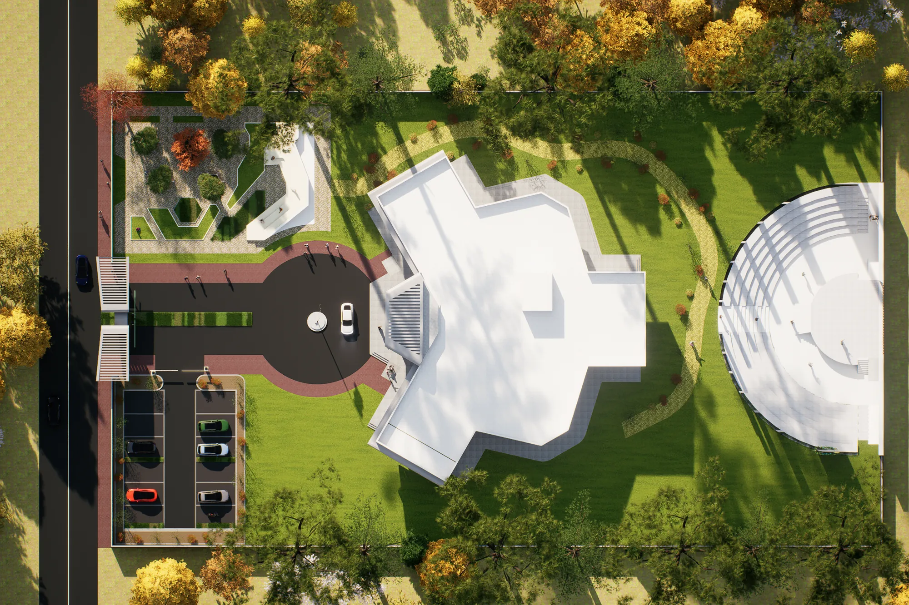

Portfolio / 02
Technical work
Plans, sections, elevations and spatial studies from academic projects.
Current project · Proposed Library
Spatial studies
The images below are 3D cutaway and site renders. CAD drawing exports will be added here when ready; these views are not presented as technical drawings.
Open Library project ↗

Drawing archive
Plans · Sections · Elevations
Drawing sheets will appear here when final files are added. No sample or internet drawings are shown as Mohammed’s work.